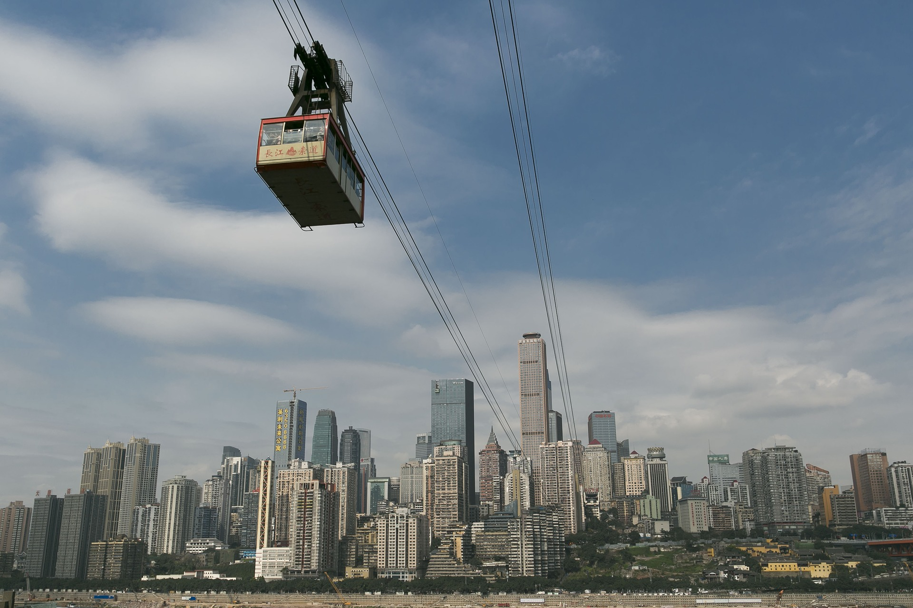
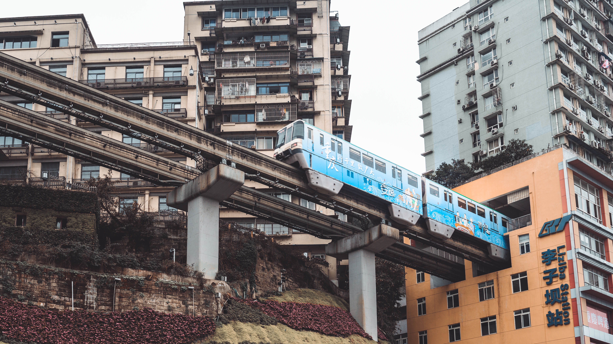

Yangtze-linbanan, som ligger i Chongqing, Kina, är den andra linbanan i Chongqing (den första är Jialing River-linbanan (demonterad)). Den har varit i drift i mer än 30 år och är känd som "den första luften korridoren av Yangtze-floden i tusentals mil " och " Mountain City Airbus ".
Yangtze River Cableway är en storskalig tvärflodspassagerarplan designad och tillverkad av Kina, med en total längd på 1 166 meter, som förbinder Chongqings Yuzhong District och Nan'an District och går mellan Xinhua Road i Yuzhong District och Shangxin Street i Nan'an District med en hastighet på 6 meter per sekund. Tiden är 4 minuter och den dagliga passagerarvolymen är 10 500.

Liziba är en station på linje 2 i Chongqing Rail Transit i Chongqing kommun, Kina. Den ligger i Yuzhong District. Det öppnade 2004.
Stationen ligger på sjätte till åttonde våningen i en 19-vånings bostadsbyggnad. Den använder specialiserad ljudreduceringsutrustning för att isolera stationsljud från de omgivande bostäderna. Till skillnad från felrapportering byggdes stationen och byggnaden tillsammans som en hel struktur. Järnvägen kördes inte mitt i en befintlig struktur.

Taxi i Chongqing bekräftade den tidigare annonsslogan "Ta inte den vanliga vägen." Vissa säger att taxi i Chongqing kan ta vägen som vanliga människor inte kan gå. Att ta en taxi i Chongqing är som att uppleva stora upp- och nedgångar i livet, och den verkliga versionen av "The Fast and the Furious" . Vissa människor säger att Chongqings taxi över bergen inte bara låter dig njuta av det vackra landskapet längs bergsstaden utan låter dig också uppleva spänningen i en berg-och dalbana.